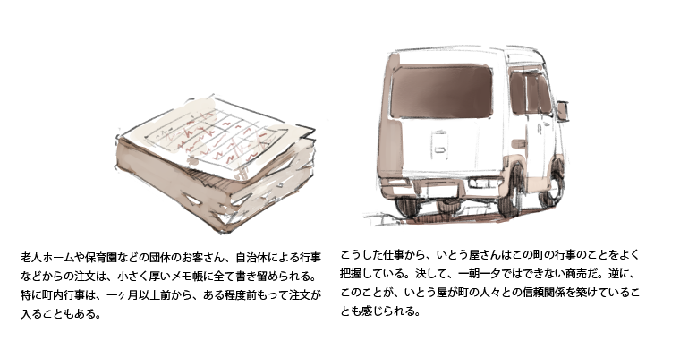

「地域行事の発注が入ると、 |
いとう屋さんでは地域の需要に合わせて和菓子だけでなく、巻物からおにぎり・お弁当といったご飯類も売っていることもあり、季節を問わず東村山市の老人ホームや保育園からの注文が常に入っている。特に、９〜１０月は運動会や町内行事が集中し繁忙期になる。
年に一回行われる市民運動会は、小学校の運動会よりもずっと規模が大きい。そのため注文も普段とは桁違い、それは前日を休業日にするほどで、一つの商品に対して１００個単位で注文がくる。
ひな祭りでは桜餅やうさぎ餅、敬老の日では紅白饅頭や赤飯、十五夜ではお団子、お彼岸はおはぎといった、行事に変化に合わせて和菓子も変化していく。それが顕著に現れるのが「ねりきり」だ。手作業と思えない細かい技巧によって日本の四季を象徴するような花や葉をかたどっていて、中には美味しいあんこが入っている。
冬には梅、春は桃、母の日にはカーネーションをかたどったねりきりが売られ、クリスマスにはもみの葉をかたどった商品も売られるそう。日本の四季の変化に従って風景が変化するように、ねりきりもショーケースの中で四季によって変化しているのだ。